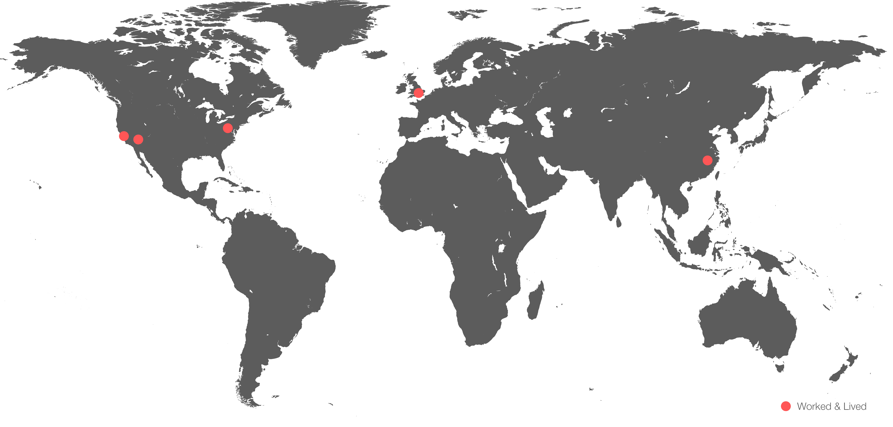

About
I was born in the US, educated in England, and am now based in San Francisco, CA where I am currently focused on entrepreneurship and early-stage startups. I specialise in e-commerce and web-based consumer products focusing on design, brand strategy and front-end design & development.
I'm a violinist with 15 years of experience, and at one point I was a semi-professional juggler -- something that is one of my more crazy passions. I'm a citizen of the world, a culinary enthusiast, and passionate about classical literature and poetry (specifically Greek and Roman works.)
Press
•Women2.0 Founders To Watch 2015 Shortlist
•Your Coffee Break; What your ring says about you according to Chloe Alpert of Teaman & Company.
•Huffington Post - 7 Unique Marriage Proposal Ideas
•Tech Crunch - 500 Startups Accelerator Announces Its Ninth Batch Of Companies And Two New EIRs
•UC Berkeley - Haas (MBA) Archives The UC Berkeley Startup Competition (LAUNCH) Winners
Professional Experience
Founder & CCO, Teaman & Company
February 2015 – March 2015 | San Francisco, CA
•Working with the Chief Executive Officer to develop cohesive and productive goals for the company and designs ways to meet them.
•Transforming rough ideas and general concepts into actions
•Lead creative team and direct project completion in line with company goals.
•Develop design concepts to further brand identity.
•Leading UX/UI concept and execution with international development team.
Founder & CEO, Teaman & Company
September 2012 – February2015 | San Francisco, CA
In 1947 a diamond was forever, but that was over 60 years ago.
It’s time to stop living in black and white.
Teaman & Company is the colored gemstone company. We’re the jeweler to the millennial generation, and we’re changing the way people buy luxury jewelry online. With our range of colored gemstone engagement rings & jewelry, we’re giving our customers access to incredible jewelry and service that they have never seen before.
It’s 2014. Dare to live in color.
•Batch 9 500 Startups
•Revenue positive as of January 2014.
•UC Berkeley LAUNCH business competition 2014 1st place products & services winner.
•The Foundry at Citris Incubator 2014-2015 at UC Berkeley
•UC Berkeley Skydeck Incubator 2015 at UC Berkeley
Marketing Director, TheShelf.com
September 2013 – December 2013 | San Francisco, CA + Las Vegas, NV
Developed brand and user outreach strategy across multiple platforms (Social Media, Blogging Campaign, B2B & Customer facing product marketing), and generated repository of over 8,000 unique bloggers for product campaigns and outreach.
Marketing & Community Development Internship at PICT.com
5/2013–9/2013 | San Francisco, CA
Helped refine and execute online marketing strategy including brand and publisher outreach, developing community repository and cultivation strategy. Was instrumental in customer facing marketing campaigns, and running user conversation marketing strategies.
As of January 2014, PICT was acquired by Popsugar.
Marketing & Product Development Internship at Hatton Jewels
September 2012 – Octoer 2012 | London, United Kingdom
Developed, refined, and executed social media & initial online customer facing marketing strategy, and achieved a 3000% increase in online traffic, enabled tools for tracking and analysing customer funnel, traffic, visits and automated content schedules.
Helped manage product and inventory accounts for the Hatton Garden showing at the 2012 Hong Kong Jewellery & Trade show, which organised and sent over £80 million of inventory from London’s Top jewellers in Hong Kong.
Business Development Manager, Sharon Teaman Designs Jewelry
2005–2013 | USA + UK + China | Family Office
Worked with suppliers from India, Australia, China, Brazil, Russia, Canada, in purchasing inventory and rough material.
Wrote inventory appraisals, and graded/priced stones for retail distribution.
Worked with internal and external manufacturers for product inventory lines and outsource production.
Graded, selected and negotiated purchasing of fine pearls in 2006 trip to Shanghai, $30,000 in direct inventory sourcing.
Graphic Design Manager, Public Relations, at THON.org
August 2009 – June 2010 | State College, PA
Graphic design & marketing in public relations for the largest student-run philanthropy in the world.
THON raised more than $8 million for paediatric cancer research and treatment at Penn State Children’s Hospital in 2009-2010.
Worked directly over 15,000 committee members and 300 managers, and helped lead and execute several unique marketing and social media campaigns, developing & founding the initial social marketing strategy.
Pennsylvania State President | Technology Student Association
2005 – 2009 (4 years)Pennsylvania, USA
Elected position to represent the 20,000+ technology and engineering Students in the state of Pennsylvania on local, state and international levels.
Oversaw the function of an elected team of eight state officers and committees, planned and coordinated the 12 regional conferences, the state conference, chaired the state business meetings (parliamentary procedure) and sat on the PATSA state board of directors.
Also Promoted STEM education in schools across the state, spoke at various education conferences including TEEAP & The PA Middle & High School Conferences, & CTSO, was the student representative of PATSA in the PA department of education and PA senate, and dealt with all business matters and amendments to the PATSA bylaws.
Co-Founder | www.soaphies.com
2001 – 2007 Pennsylvania, USA
Handmade glycerine soaps and essentials from our home to yours. Opened two stores in Pennsylvania, moved 100% online and continued to do trade shows around the country. Soaphies.com is on hiatus to be revisited in the future, 100% IP retained and licensed.


{kind=link}
{kind=link}
{kind=link}
{kind=link}
{kind=link}
{kind=link}
{kind=link}
{kind=link}
{kind=link}
{kind=link}
{kind=link}
{kind=link}
{kind=link}
{kind=link}
{kind=link}
{kind=link}
{kind=link}